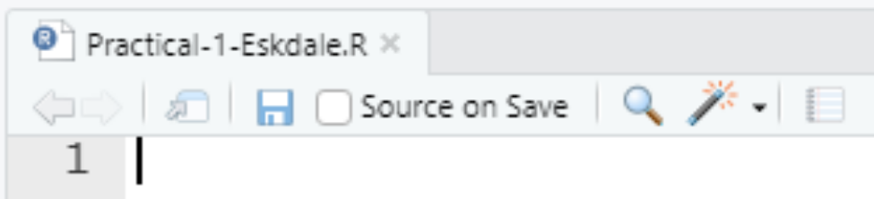

Chapter 5 Eskdale II - Set-up
5.1 Install programs
If you haven’t installed R and RStudio, please refer to the instructions here before continuing.
5.2 Download data
If you’ve not already done so, the data for this practical can be downloaded here. The directory structure is outlined in Chapter 2.
5.4 Initialise an R project
In the previous chapter, we typed commands into the console and used R scripts to store commands and comments.
For both Practicals 1 (Eskdale) and 2 (Mersey), we are going to expand on these by also utilising R projects. Projects make life simpler by allowing us to access file locations (e.g. for loading and writing data) using relative file paths, rather than using the clunky and prone-to-breaking absolute file paths.
Relative file paths work by setting the working directory, which is simply the the default location where R will look for files you want to load and where it will put any files you save. We can do this manually by using the setwd() function, but a simpler approach is to use an R project, which sets the working directory for your automatically.
Rather than the complicated absolute file paths:
which indicates that the file is located in data, which is within GEOG-70581, which is within Documents, which is within Bill, which is within Users, which is on the C drive, we can set the working directory to GEOG-70581 (for example) and then access the file using the here package:
This approach not only makes it easier to access files, but also improves reproducibility. Using projects ensures that our work is self-contained (the project directory contains all the data, scripts and outputs) and portable. Transferring the project directory to another user, to a different sub-folder on your computer, or a different drive, would not cause any code to fail. By comparison, scripts featuring absolute file paths or a manually defined working directory would likely fail in any of the above scenarios.
To initialise a new R project:
Go to File, New Project, and select Existing Directory. Using the Browse icon, set the project working directory to the folder GEOG70581, which you downloaded and unzipped here. Select Create new project
If this has been successful, your console should have been updated to include the path to your project working directory as follows:
5.5 Creating an R script
Now that we have created our project for GEOG70581, we are going to use scripts to store the code for each practical. We’ll create a script for Practical 1 and a separate script for Practical 2.
Important: a script can be understood as a set of instructions. As a result, the order of the code is critical. A useful metaphor may be to think of a script as a recipe. For example, a simple cake recipe might require butter, sugar, eggs, flour, milk, vanilla extract and lemon. These could be combined as follows:
- Pre-heat oven.
- Whisk butter and sugar.
- Crack the eggs in one at a time and whisk.
- Add the lemon zest, vanilla, flour and milk and whisk.
- Bake in the oven for 30 mins.
In code form, it might resemble the following, with a vector including the ingredients and different functions used to combine the ingredients (whisk), turn on the oven (pre_heat) and bake (bake_mixture):
# Vector of ingredients
ingredients <- c(butter, sugar, eggs, flour, milk, vanilla, lemon)
# Pre-heats oven for 20 minutes
pre_heat(20)
# Create a mixture of butter and sugar using the whisk function,
mixture <- whisk(ingredients$butter, ingredients$sugar)
# Iterates (loops) over eggs variable
for (i in length(ingredients$eggs)){
# Extracts each egg, one at a time
current_egg <- ingredients$eggs[i]
# Adds current egg to mixture
mixture <- whisk(mixture, current_egg)
}
# Add remaining ingredients
mixture <- whisk(mixture, ingredients$flour, ingredients$milk, ingredients$vanilla, ingredients$lemon)
# If oven temperature is 180 degrees of more
if(oven_temperature >= 180){
# Bake for 30 minutes
cake <- bake(mixture, time = 30)
}From the text and code example above, it should be clear that our recipe (and code) would not work correctly if we tried to bake in the oven before pre-heating it, or added the ingredients in the wrong order. In exactly the same way, it is important that your code is formatted in a logical order (e.g. Function 1, Function 2, Function 3, …). Ensure that your future code reflects the recipe above, where individual functions utilise variables created previously, and don’t rely on variables created further down in the code.
To create an R script for Practical 1:
Navigate to File, New File and R Script.
To save the script:
Navigate to File and Save As, and save it in the GEOG70581 folder with an appropriate name (e.g.
Practical-1-Eskdale)
This should now resemble the following:

5.6 Install WhiteboxTools
For Practical 1, we are going to use the following packages:
ggplot2- for data visualisation;
here- to construct paths to your project files;
raster- for reading, analysing and writing of raster and vector data;
sf- for simple storage of vector data;
ggspatial- for simple plotting of raster data in ggplot2;
whitebox- for geospatial analysis (a front-end for WhiteboxTools);
These packages can be installed as normal using the install.packages() and library() functions. In previous versions of this course, whitebox was not available (because of complicated reasons) on the Comprehensive R Archive Network (CRAN).
Instead, it had to be installed using R-Forge. While CRAN is the official package repository for R and generally features “release” versions of packages, R-Forge provides candidate, beta or “work-in-progress” packages or packages which don’t meet the criteria for inclusion on CRAN.
However, as of the 27th October, whitebox is now back on CRAN so we can install as normal using the install.packages() function.
It is worth noting, however, that you can install packages from R-Forge by simply specifying the repository (web location) where the package is stored, in this case: http://R-Forge.R-project.org.
# Installing a package via R-Forge
install.packages("insert package name here", repos="http://R-Forge.R-project.org")Note You don’t need to run the above code - this is just an example of how to install via an alternative repository.
One additional step, which is different from “normal” R package installation, is to use the function whitebox::install_whitebox(), which initialises WhiteboxTools:
This should print the following to your console:
Performing one-time download of WhiteboxTools binary from
https://jblindsay.github.io/ghrg/WhiteboxTools/WhiteboxTools_win_amd64.zip
(This could take a few minutes, please be patient...)
WhiteboxTools binary is located at: C:/Users/44797/OneDrive/Documents/R/win-library/4.0/whitebox/WBT/whitebox_tools.exe
You can now start using whitebox
> library(whitebox)
> wbt_version()This code checks if a suitable WhiteboxTools executable is present (.exe) and installs if missing. The WhiteboxTools executable contains all the code used for geospatial analysis, which we then access using R via the whitebox R package. This is a slightly different configuration from normal R packages but enables WhiteboxTools to be used cross-platform i.e. WhiteboxTools functionality stored in the executable can be assessed through R, Python, ArcGIS or QGIS etc, depending on the user needs.
Run the below code to install the
whiteboxpackage, initialise WhiteboxTools (which should perform a one-time download of the WhiteboxTools executable) and check it is installed correctly.
# Install the whitebox R package
install.packages("whitebox")
# Initialise WhiteboxTools
whitebox::install_whitebox()
# Add the whitebox R package to library
library(whitebox)
# Check the version is correct
wbt_version()When complete, WhiteboxTools has now been successfully installed and initialised and is almost ready to be used.
However, to avoid re-installing and re-initialisng WBT every time we run our script, we can either delete the code or comment-out # each line. Remember that R ignores any line of code that begins with #:
Either delete or comment-out the previous command (
install_whitebox()).Ctrl + Shift + Cis a useful shortcut for adding or removing comments from multiple lines of highlighted code.
5.7 Loading packages
To finish the set-up for Practical 1, we are going to install the remaining required R packages (described above) and load them into the R library.
We’ve already practiced installing and loading the ggplot2 package in Chapter 2 so you are ready for the following:
Referring back to the instructions here, install and load
ggplot2,here,raster,sf,ggspatialandwhitebox. Hint 1 - we’ve already installed whitebox, so this can be excluded if you’re using install.packages() and the library() commands. Hint 2 - the user-defined functioncheck.packagesmight be useful here.
If the package has been installed and loaded correctly, the console should print the following:
where the logical value TRUE equates to a successful installation (and vice versa for FALSE).